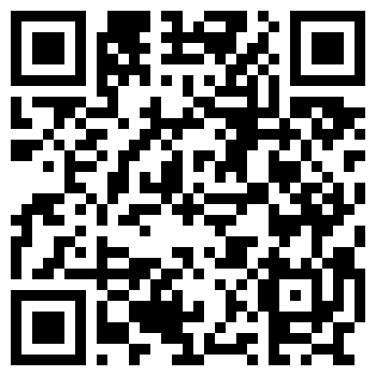

Mira · Guide
The best vision board apps for iPhone, compared
I make Mira, one of the apps on this list, so I am not neutral, and you should read this with that in mind. What I can do is be specific: what each app says it does on its App Store page, what it charges, and who it suits, so you can check every claim yourself.
Prices and ratings are from the US App Store in October 2026. Apps change their prices often, so treat the numbers as a guide and check the store before you subscribe.
What actually matters in a vision board app
Almost every vision board app lets you add photos and affirmations. The differences are elsewhere: whether the board reaches you without opening the app, whether the words travel with the pictures, how much else is bundled in, and what it costs after the trial.
A board you have to remember to open is a board you stop opening. So the first question is where the board shows up: inside the app, on the Home Screen, or on the Lock Screen, where you look dozens of times a day.
1. Mira: for a board you see without opening an app
Mira is built around the widget. Each photo comes with a short phrase, and the widget moves through your board on its own, on the Home Screen, the Lock Screen or both. There is no feed, no image library to scroll and no account; the board stays on your phone.
- Widgets: Home Screen and Lock Screen, with a photo and a phrase together.
- Extras: a library of phrases for eight areas of life, eight widget themes, a daily reminder.
- Price: free for a small board (six photos); Premium is $2.99 a week, $24.99 a year or $44.99 once.
- Watch out: it is new (released September 2026), so it has no ratings yet, and there are no videos, journals or AI.
2. Vision Board ++: for the most features in one app
Vision Board ++ is the all-in-one option: boards with different grids, “Magic Movies” with music, spoken affirmations in a choice of voices or your own, AI-generated affirmations from a wish you type, a gratitude journal and iCloud sync.
- Widgets: Home Screen and Lock Screen, both listed on its App Store page.
- Ratings: 4.8 from about 3,000 US ratings.
- Price: listed purchases include $2.99 a week and $18.99 to $29.99 a year.
- Watch out: with that much in one app, the board itself is one feature among many.
3. Perfectly Happy: for vision boards with mood and gratitude tracking
Perfectly Happy mixes a vision board with daily habits: a mood tracker, a gratitude journal, over 6,000 affirmations and a vision board video with music and spoken words. It is one of the oldest apps here, around since 2020.
- Widgets: Home Screen widgets.
- Ratings: 4.8 from about 4,600 US ratings.
- Price: $10.99 a month or $58.99 a year, the most expensive on this list.
- Watch out: you pay for the whole wellbeing bundle even if you only want the board.
4. Dreamer: for working out what you want first
Dreamer’s angle is self-discovery: guided reflection on your desires, strengths and direction before you build the board, then affirmations, reminders and widgets to keep it in view.
- Widgets: yes, listed on its App Store page.
- Ratings: 4.7 from about 1,000 US ratings.
- Price: listed purchases range from $7.99 to $24.99, including a $19.99 lifetime option.
- Watch out: it needs iOS 18 or later.
5. Vision Board & Goal Tracker: for an aesthetic collage
This one (it calls itself Vision Board – Aesthetic Quote inside the app) is about the look: you design a board and affirmation cards with your own fonts, colours and backgrounds, then save them to your camera roll or put them on a widget.
- Widgets: a Home Screen widget for your board or affirmations.
- Ratings: 4.7 from about 3,800 US ratings.
- Price: $6.99 a week, $19.99 a year, or $49.99 lifetime.
- Watch out: a saved collage is a still image, so it doesn’t change unless you remake it.
6. Why Vision Board: for a daily streak
Why turns looking at your board into a habit with streaks and daily alerts, and supports several boards, one for each area of your life, plus an affirmation widget for the Home Screen.
- Widgets: a Home Screen affirmation widget.
- Ratings: 4.7 from about 1,500 US ratings.
- Price: listed purchases include $3.99 to $9.99 a month and $19.99 to $39.99 a year.
- Watch out: its last update in the store was in January 2025.
7. Vizzy: for a simple board on the Home Screen
Vizzy keeps things simple: build a board from your photos or its image library, add quotes and affirmations, and put the board on your Home Screen as a widget.
- Widgets: Home Screen.
- Ratings: 4.4 from about 600 US ratings.
- Price: purchases are optional; listed tiers run from $7.99 to $39.99.
- Watch out: its store page lists the fewest features here, so check it does what you need before paying.
The free option: what is already on your iPhone
You may not need an app at all. A Photos widget will move through an album on your Home Screen, Photo Shuffle turns a set of pictures into a changing Lock Screen wallpaper, and Freeform lets you lay out a collage. None of them puts words next to the pictures, but they cost nothing and take ten minutes.
Which one to choose
If you want everything in one place, videos, voices and journals included, Vision Board ++ or Perfectly Happy. If you are not sure what you want yet, Dreamer. If you care most about how the board looks, Vision Board & Goal Tracker. If you want the board to find you on the Lock Screen, with the words beside each picture and nothing else in the way, that is the one thing Mira is built to do.
Try before you subscribe
Every app here is free to download, and most have a trial or a free tier. Build a small board in two of them, live with each for a few days, and keep the one you actually end up looking at.

on your iPhone